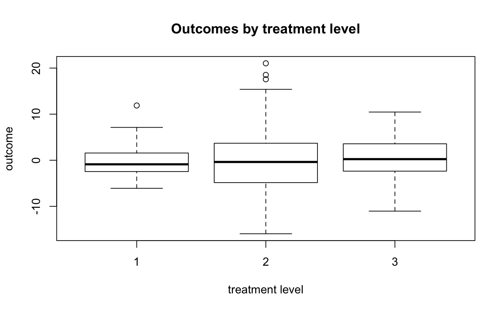

Description
In setting with Multi-level treatments, our goal is to estimate pairwise average treatment effects from a common population using matching methods.
This goal can not be acheived by matching one treatment with another one at a time, since the pairwise matched samples may differ from the target population systematically, and thus they are not compatitable. One implication is that from this approach, it is possible that treatment A is better than treatment B, treatment B is better than treatment C, and treatment C is better than treatment A.
We focus on estimating the average values of potential outcomes for each treatment level by matching methods, which facilitate estimation of pairwise average treatment effects for a common population.
The estimation methods include generalized propensity score (GPS) matching, GPS stratification, matching with the full set of covariates, matching with the full set of GPS vector. Note that GPS matching and GPS straticication only require matching on a scalar function when estimating the average value of the potential outcome at a particular treatment level, which reduces the matching dimension to one, regardless of the number of covariates and the number of treatment levels.
In order to ensure sufficient overlap, Crump et al. (2009)’s trimming method can be extended to this setting as well.
Main Paper: Yang et al. (2016)
Yang, S., Imbens G. W., Cui, Z., Faries, D. E., & Kadziola, Z. (2016) Propensity Score Matching and Subclassification in Observational Studies with Multi-Level Treatments. Biometrics, 72, 1055-1065. https://doi.org/10.1111/biom.12505
Use
The functions implementing matching methods are shown here:
Note that these functions have slightly different syntax. The multiMatch() function was added to standardize some of the inputs, has more verbose output with S3 class "multiMatch".
Toy example
## Outcome
Y <- c(102,105,120,130,100,80,94,108,96)
## Treatment level
W <- c(1,1,1,3,2,3,2,1,2)
## Baseline Covariates
X <- c(5.5,10.6,3.1,8.7,5.1,10.2,9.8,4.4,4.9)
Matching on covariates
library(multilevelMatching)
set.seed(123)
multilevelMatchX(Y,W,X)
#> $tauestimate
#> EY(2)-EY(1) EY(3)-EY(1) EY(3)-EY(2)
#> -10.666667 6.666667 17.333333
#>
#> $varestimate
#> EY(2)-EY(1) EY(3)-EY(1) EY(3)-EY(2)
#> 9.111111 615.580247 613.925926
multiMatch(Y,W,X, match_on = "covariates")
#> no unit IDs supplied; unit_ids will be assigned generically
#> Warning in prepareData(Y = Y, W = W, X = X, match_on = match_on, trimming
#> = trimming, : It is recommended that X is a matrix. X will be coerced to a
#> matrix.
#> -------------- Causal estimates ---------------
#> Param Trt1 Trt2 Estimate Variance
#> 1 EY(2)-EY(1) 1 2 -10.666667 9.111111
#> 2 EY(3)-EY(1) 1 3 6.666667 615.580247
#> 3 EY(3)-EY(2) 2 3 17.333333 613.925926
#> --- Matching on 'covariates' with M=1, J=1 ---
Matching on Estimated Propensity Score
Using multinomial logistic regression:
## v0.1
multilevelGPSMatch(Y,W,X,Trimming=0,GPSM="multinomiallogisticReg")
#> $tauestimate
#> EY(2)-EY(1) EY(3)-EY(1) EY(3)-EY(2)
#> -10.444444 6.666667 17.111111
#>
#> $varestimate
#> EY(2)-EY(1) EY(3)-EY(1) EY(3)-EY(2)
#> 8.545953 616.913580 611.122085
#>
#> $varestimateAI2012
#> EY(2)-EY(1) EY(3)-EY(1) EY(3)-EY(2)
#> 8.302024 411.456234 434.247037
#>
#> $analysisidx
#> [1] 1 2 3 4 5 6 7 8 9
## v0.1.0.9000+
multiMatch(Y,W,X,trimming = 0, match_on = "multinom")
#> no unit IDs supplied; unit_ids will be assigned generically
#> Warning in prepareData(Y = Y, W = W, X = X, match_on = match_on, trimming
#> = trimming, : It is recommended that X is a matrix. X will be coerced to a
#> matrix.
#> -------------- Causal estimates ---------------
#> Param Trt1 Trt2 Estimate Variance VarianceAI2016
#> 1 EY(2)-EY(1) 1 2 -10.444444 8.545953 8.302024
#> 2 EY(3)-EY(1) 1 3 6.666667 616.913580 411.456234
#> 3 EY(3)-EY(2) 2 3 17.111111 611.122085 434.247037
#> --- Matching on 'multinom' with M=1, J=1 ---
Using ordinal logistic regression:
## v0.1
multilevelGPSMatch(Y,W,X,Trimming=1,GPSM="multinomiallogisticReg")
#> $tauestimate
#> EY(2)-EY(1) EY(3)-EY(1) EY(3)-EY(2)
#> -9.375 5.875 15.250
#>
#> $varestimate
#> EY(2)-EY(1) EY(3)-EY(1) EY(3)-EY(2)
#> 7.794922 582.654297 576.304688
#>
#> $varestimateAI2012
#> EY(2)-EY(1) EY(3)-EY(1) EY(3)-EY(2)
#> 5.072057 383.848575 430.978089
#>
#> $analysisidx
#> 1 2 4 5 6 7 8 9
#> 1 2 4 5 6 7 8 9
## v0.1.0.9000+
multiMatch(Y,W,X,trimming = 0, match_on = "multinom")
#> no unit IDs supplied; unit_ids will be assigned generically
#> Warning in prepareData(Y = Y, W = W, X = X, match_on = match_on, trimming
#> = trimming, : It is recommended that X is a matrix. X will be coerced to a
#> matrix.
#> -------------- Causal estimates ---------------
#> Param Trt1 Trt2 Estimate Variance VarianceAI2016
#> 1 EY(2)-EY(1) 1 2 -10.444444 8.545953 8.302024
#> 2 EY(3)-EY(1) 1 3 6.666667 616.913580 411.456234
#> 3 EY(3)-EY(2) 2 3 17.111111 611.122085 434.247037
#> --- Matching on 'multinom' with M=1, J=1 ---
Stratifying on Estimated Propensity Score
There are some additional arguments for using the stratification method
NS <- 5 ## The number of strata to divide into
linearp <- FALSE ## Use subclassification, not linear prediction
nboot <- 10 ## Number of bootstrap samples for variance estimation
We will use the dataset provided with this package
data("simulated_data", package = "multilevelMatching")
knitr::kable(head(simulated_data), digits = 2)
| -5.13 |
1 |
-0.87 |
0.24 |
0.23 |
-2.89 |
0.21 |
0 |
| -3.03 |
1 |
0.27 |
-0.35 |
-0.40 |
-2.21 |
0.07 |
1 |
| 3.05 |
1 |
1.42 |
1.32 |
-1.20 |
0.06 |
1.26 |
1 |
| -6.09 |
1 |
-1.39 |
-1.07 |
1.12 |
-2.36 |
0.00 |
0 |
| -2.46 |
1 |
-1.15 |
0.95 |
0.51 |
-2.68 |
0.07 |
0 |
| -0.32 |
1 |
0.27 |
0.42 |
-0.45 |
2.43 |
0.60 |
0 |
boxplot(
outcome ~ treatment,
data = simulated_data,
xlab = "treatment level",
ylab = "outcome",
main = "Outcomes by treatment level"
)

multilevelGPSStratification(
Y = simulated_data$outcome,
W = simulated_data$treatment,
X = as.matrix(simulated_data[,-(1:2)]),
GPSM = "multinomiallogisticReg",
NS = NS,
linearp = linearp,
nboot = nboot
)
#> $tauestimate
#> EY(2)-EY(1) EY(3)-EY(1) EY(3)-EY(2)
#> -0.2593016 0.2684324 0.5277340
#>
#> $varestimate
#> EY(2)-EY(1) EY(3)-EY(1) EY(3)-EY(2)
#> 0.0752562 0.1793161 0.2744478